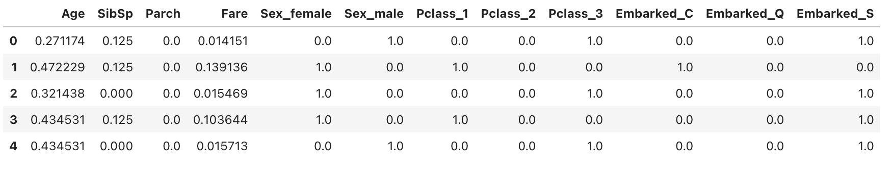

Kaggle上面的Titanic - Machine Learning from Disaster
简要分析
首先看数据 1
2
3train_path = '/kaggle/input/titanic/train.csv'
train_data = pd.read_csv(train_path)
train_data.head()
主要是从一些feature进行预测,target feature为Survived,仅0,1,标准二分类. 官方文档也提供了feature engineering的思路. 可以后续做优化不过这里仅做baseline和必要处理,比如fillna,one-hot-encoding之类的.
通过info看下数据na情况. 
可以看到age需要进行fillna, Cabin因为na过多可以丢弃, 其余numerical可以做MinMaxScale.
1 | from sklearn.preprocessing import MinMaxScaler |
处理完之后数据长成这样 
后续丢模型训练就行,二分类可以直接丢LogisticRegression,或者也可以自己写个MLP
LogisticRegression
平时并没有怎么用sklearn,不过试了下感觉挺不错的,也可以自己手写一个,预测结果大概也是0.8左右. 1
2
3
4
5
6
7
8
9
10
11
12# sklearn Logistic Regression
from sklearn.linear_model import LogisticRegression
from sklearn.metrics import accuracy_score
# potentially use rfe for feature selection
# rfe = RFE(model, 8)
# rfe.fit(X, y)
LR = LogisticRegression()
LR.fit(feature,label)
y_pred = LR.predict(feature)
print(accuracy_score(y_pred, label))
# 0.8013468013468014
K-Folder
顺手做一手K-Folder
1 | # K-fold cross validation |
PyTorch MLP
主要写一个dataset和dataloader, 然后nn.Module写一个model, 然后zero_grad,backward,step. 最后手动存y做一下accuracy的输出. 这里model删除第2,3层全连和1,2层激活函数,把第一层输出改成1即pytorch实现的LR,效果也和sklearn的差不多.
1 | # PyTorch MLP |
输出结果 1
2
3
4
5
6
7
8
9
10
11
12
13
14
15
16
17
18
19
20Epoch 10:3.5960923433303833, train accuracy:0.7064606547355652, test accuracy:0.7430167198181152
Epoch 20:3.1748223900794983, train accuracy:0.7851123809814453, test accuracy:0.8156424164772034
Epoch 30:2.885961800813675, train accuracy:0.8089887499809265, test accuracy:0.832402229309082
Epoch 40:2.7163011729717255, train accuracy:0.8047752976417542, test accuracy:0.8212290406227112
Epoch 50:2.670557290315628, train accuracy:0.8089887499809265, test accuracy:0.8156424164772034
Epoch 60:2.5934107899665833, train accuracy:0.8202247023582458, test accuracy:0.8212290406227112
Epoch 70:2.5730879604816437, train accuracy:0.8188202381134033, test accuracy:0.8268156051635742
Epoch 80:2.574642688035965, train accuracy:0.8146067261695862, test accuracy:0.8268156051635742
Epoch 90:2.5959592163562775, train accuracy:0.8160112500190735, test accuracy:0.8268156051635742
Epoch 100:2.555866301059723, train accuracy:0.8132022619247437, test accuracy:0.8268156051635742
Epoch 110:2.5190521478652954, train accuracy:0.8160112500190735, test accuracy:0.832402229309082
Epoch 120:2.5432372093200684, train accuracy:0.8132022619247437, test accuracy:0.8379887938499451
Epoch 130:2.5101636350154877, train accuracy:0.8132022619247437, test accuracy:0.8268156051635742
Epoch 140:2.4863936603069305, train accuracy:0.8146067261695862, test accuracy:0.8268156051635742
Epoch 150:2.441671073436737, train accuracy:0.8117977380752563, test accuracy:0.8268156051635742
Epoch 160:2.452588587999344, train accuracy:0.8160112500190735, test accuracy:0.8268156051635742
Epoch 170:2.4411253333091736, train accuracy:0.8132022619247437, test accuracy:0.8268156051635742
Epoch 180:2.5097872614860535, train accuracy:0.8117977380752563, test accuracy:0.8268156051635742
Epoch 190:2.428959161043167, train accuracy:0.817415714263916, test accuracy:0.8268156051635742
Epoch 200:2.395860642194748, train accuracy:0.8188202381134033, test accuracy:0.8268156051635742
submission
1 | # submission |